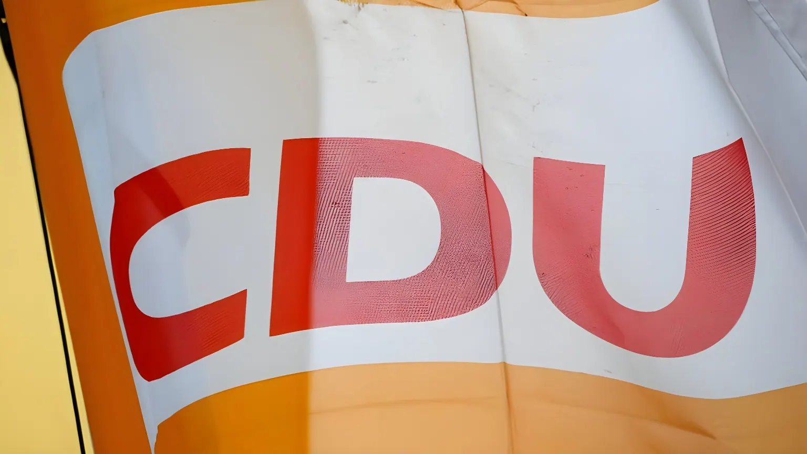

Dimanche 13 septembre 2026, environ 6,3 millions d'électeurs de Basse-Saxe ont été appelés à renouveler leurs conseils municipaux, conseils d'arrondissement et exécutifs locaux. La CDU reste la première force du Land avec 27,2 % des voix, mais recule de 4,5 points, tout comme la SPD (24,6 %, -5,4). Le grand vainqueur du scrutin est l'AfD, qui plus que triple son score de 2021 pour atteindre 15,9 % et devance désormais les Verts. Trois grandes villes du Land, Hanovre, Brunswick et Salzgitter, où l'AfD est arrivée en tête du conseil municipal, se dirigent vers un second tour le 27 septembre.
Au niveau des arrondissements (Kreisebene), qui sert de référence pour comparer les résultats à l'échelle du Land, la CDU obtient 27,2 % des voix, loin devant son niveau de 2021 (31,7 %). La SPD, le parti du ministre-président Olaf Lies, chute plus lourdement encore, de 30,0 % à 24,6 %. Les deux partis qui gouvernent traditionnellement la Basse-Saxe perdent ainsi, ensemble, près de dix points en cinq ans. Les Verts reculent légèrement à 14,1 % (-1,8), tandis que Die Linke double presque son score pour atteindre 6,0 % (+3,2) et que le FDP recule à 3,7 % (-2,8).
La véritable rupture vient de l'AfD, qui recueille 15,9 % des voix contre 4,6 % en 2021, soit un gain de 11,3 points qui en fait de loin la première force politique en progression de la soirée. Le parti dépasse ainsi les Verts et s'installe comme troisième force du Land, avec une implantation désormais quasi générale dans les conseils d'arrondissement et les conseils municipaux des villes-arrondissements.
Le maire sortant Belit Onay (Verts) arrive largement en tête avec 45,6 % des voix, loin devant le candidat SPD Axel von der Ohe (21,5 %). N'ayant pas atteint la majorité absolue, les deux hommes s'affronteront en ballottage le 27 septembre.
Le maire sortant Thorsten Kornblum (SPD) obtient 43,3 % et devra affronter le candidat CDU Maximilian Pohler (17,2 %) en ballottage, devant les Verts (14,3 %) et l'AfD (11,2 %).
Le maire sortant Frank Klingebiel (CDU) recueille 45,6 % des voix pour sa réélection, mais devra défendre son siège en ballottage face à la candidate de l'AfD, Patricia Mair, créditée de 25,7 %, devant le candidat SPD Tobias Bey (19,4 %).
Dans cette même ville, l'AfD devient pour la première fois la première force au conseil municipal avec 27,4 % des voix, devant la SPD (25,9 %) et la CDU (23,2 %).
Le cas de Salzgitter, ville industrielle de plus de 100 000 habitants marquée par un chômage supérieur à la moyenne et une forte proportion d'habitants issus de l'immigration, est scruté de près : en 2021, le maire sortant Frank Klingebiel (CDU) avait été réélu dès le premier tour avec 54,9 % des voix, et l'AfD ne pesait alors qu'environ 10 % au conseil municipal. Cinq ans plus tard, une candidate d'extrême droite se retrouve en position de disputer la mairie d'une grande ville d'Allemagne de l'Ouest, une configuration jusqu'ici inédite.
| Acteur | Position |
|---|---|
| Olaf Lies (SPD) | Ministre-président de Basse-Saxe, premier scrutin depuis sa prise de fonction |
| Sebastian Lechner (CDU) | Chef de la CDU régionale, revendique un succès dans un contexte difficile |
| Ansgar Schledde (AfD) | Président de l'AfD en Basse-Saxe, évoque un « succès historique » |
| Belit Onay (Verts) | Maire sortant de Hanovre, en tête au premier tour, en ballottage |
| Frank Klingebiel (CDU) | Maire sortant de Salzgitter, en ballottage face à l'AfD |
« L'AfD est, depuis aujourd'hui, un parti d'ancrage local. Nous sommes désormais représentés dans tous les conseils d'arrondissement et de villes-arrondissements du Land, ainsi que dans des centaines de conseils municipaux. »
— Ansgar Schledde, président de l'AfD en Basse-Saxe, 13 septembre 2026Le ministre-président Olaf Lies a lui-même reconnu un « résultat difficile » pour son parti. Un sondage Insa publié quelques jours avant le scrutin, pour le compte du quotidien Bild, plaçait déjà la SPD à 26 % et la CDU à 22 % dans la perspective des élections régionales prévues en 2027, où Olaf Lies et le chef de la CDU Sebastian Lechner devraient à nouveau s'affronter. Cette élection communale constitue ainsi le premier grand test électoral depuis qu'Olaf Lies a succédé à Stephan Weil (tous deux SPD) à la tête du Land.
Le scrutin du 13 septembre confirme une tendance déjà observée ailleurs en Allemagne cette même semaine : l'affaiblissement conjoint de la CDU et de la SPD ne se traduit pas par un rééquilibrage entre les partis établis, mais par un basculement d'une partie de l'électorat vers l'AfD, y compris dans des territoires de l'Ouest jusqu'ici épargnés par ce phénomène. Les trois seconds tours du 27 septembre, à Hanovre, Brunswick et surtout à Salzgitter, où l'AfD pourrait pour la première fois conquérir une mairie de grande ville en Allemagne de l'Ouest, diront si cette dynamique se traduit aussi en postes exécutifs, à quelques mois d'une élection régionale déjà annoncée comme très disputée.
Am Sonntag, den 13. September 2026, waren rund 6,3 Millionen Wahlberechtigte in Niedersachsen aufgerufen, ihre Stadt- und Gemeinderäte, Kreistage und kommunalen Spitzenämter neu zu wählen. Die CDU bleibt mit 27,2 Prozent stärkste Kraft im Land, verliert aber 4,5 Punkte, ebenso wie die SPD (24,6 Prozent, -5,4). Großer Gewinner der Wahl ist die AfD, die ihr Ergebnis von 2021 mehr als verdreifacht und mit 15,9 Prozent nun vor den Grünen liegt. In drei großen Städten des Landes, Hannover, Braunschweig und Salzgitter, wo die AfD stärkste Kraft im Stadtrat wurde, kommt es am 27. September zu Stichwahlen.
Auf Kreisebene, die als Vergleichswert für das Landesergebnis dient, erreicht die CDU 27,2 Prozent, deutlich weniger als 2021 (31,7 Prozent). Die SPD, die Partei von Ministerpräsident Olaf Lies, fällt noch stärker, von 30,0 auf 24,6 Prozent. Die beiden traditionellen Regierungsparteien Niedersachsens verlieren damit gemeinsam fast zehn Punkte innerhalb von fünf Jahren. Die Grünen verlieren leicht auf 14,1 Prozent (-1,8), während die Linke ihr Ergebnis auf 6,0 Prozent (+3,2) nahezu verdoppelt und die FDP auf 3,7 Prozent (-2,8) zurückfällt.
Der eigentliche Umbruch geht von der AfD aus, die 15,9 Prozent der Stimmen erhält, gegenüber 4,6 Prozent im Jahr 2021 – ein Zugewinn von 11,3 Punkten, der sie zur mit Abstand größten Gewinnerin des Wahlabends macht. Die Partei überholt damit die Grünen und etabliert sich als drittstärkste Kraft im Land, mit einer inzwischen nahezu flächendeckenden Präsenz in den Kreistagen und den Räten der kreisfreien Städte.
Amtsinhaber Belit Onay (Grüne) liegt mit 45,6 Prozent klar vorn, weit vor SPD-Kandidat Axel von der Ohe (21,5 Prozent). Da keiner die absolute Mehrheit erreichte, treten beide am 27. September in der Stichwahl gegeneinander an.
Amtsinhaber Thorsten Kornblum (SPD) erreicht 43,3 Prozent und muss sich in der Stichwahl CDU-Kandidat Maximilian Pohler (17,2 Prozent) stellen, vor den Grünen (14,3 Prozent) und der AfD (11,2 Prozent).
Amtsinhaber Frank Klingebiel (CDU) kommt auf 45,6 Prozent, muss sein Amt aber in der Stichwahl gegen die AfD-Kandidatin Patricia Mair (25,7 Prozent) verteidigen, vor SPD-Kandidat Tobias Bey (19,4 Prozent).
In derselben Stadt wird die AfD mit 27,4 Prozent erstmals stärkste Kraft im Stadtrat, vor der SPD (25,9 Prozent) und der CDU (23,2 Prozent).
Der Fall Salzgitter, eine Industriestadt mit über 100.000 Einwohnern, geprägt von überdurchschnittlicher Arbeitslosigkeit und einem hohen Anteil an Menschen mit Migrationshintergrund, wird genau beobachtet: 2021 wurde Amtsinhaber Frank Klingebiel (CDU) bereits im ersten Wahlgang mit 54,9 Prozent wiedergewählt, die AfD kam im Stadtrat damals nur auf etwa 10 Prozent. Fünf Jahre später steht eine rechtsextreme Kandidatin nun in Reichweite des Bürgermeisteramts einer westdeutschen Großstadt – eine bislang beispiellose Konstellation.
| Akteur | Position |
|---|---|
| Olaf Lies (SPD) | Ministerpräsident Niedersachsens, erste Wahl seit seinem Amtsantritt |
| Sebastian Lechner (CDU) | Landesvorsitzender der CDU, spricht trotz schwierigem Umfeld von einem Erfolg |
| Ansgar Schledde (AfD) | AfD-Landesvorsitzender in Niedersachsen, spricht von einem „historischen Erfolg" |
| Belit Onay (Grüne) | Amtierender Oberbürgermeister von Hannover, im ersten Wahlgang vorn, in der Stichwahl |
| Frank Klingebiel (CDU) | Amtierender Oberbürgermeister von Salzgitter, in der Stichwahl gegen die AfD |
„Die AfD ist seit heute Kommunalpartei. Wir sind nun flächendeckend in allen Kreistagen und Stadträten der kreisfreien Städte vertreten, zusätzlich in Hunderten Gemeinde- und Stadträten."
— Ansgar Schledde, AfD-Landesvorsitzender Niedersachsen, 13. September 2026Ministerpräsident Olaf Lies selbst räumte für seine Partei ein „schwieriges Ergebnis" ein. Eine wenige Tage vor der Wahl veröffentlichte Insa-Umfrage im Auftrag der „Bild"-Zeitung sah die SPD bereits bei 26 Prozent und die CDU bei 22 Prozent im Hinblick auf die für 2027 erwartete Landtagswahl, bei der Olaf Lies voraussichtlich erneut auf CDU-Landeschef Sebastian Lechner treffen wird. Diese Kommunalwahl ist damit der erste große Stimmungstest, seit Olaf Lies das Amt des Ministerpräsidenten von Stephan Weil (beide SPD) übernommen hat.
Die Wahl vom 13. September bestätigt einen Trend, der in derselben Woche auch anderswo in Deutschland zu beobachten war: Die gemeinsame Schwäche von CDU und SPD führt nicht zu einer Verschiebung zwischen den etablierten Parteien, sondern zu einer Abwanderung eines Teils der Wählerschaft zur AfD – auch in westdeutschen Regionen, die von diesem Phänomen bislang verschont geblieben waren. Die drei Stichwahlen am 27. September, in Hannover, Braunschweig und vor allem in Salzgitter, wo die AfD erstmals ein Bürgermeisteramt in einer westdeutschen Großstadt erobern könnte, werden zeigen, ob sich diese Dynamik auch in Führungsämtern niederschlägt – wenige Monate vor einer Landtagswahl, die schon jetzt als hart umkämpft gilt.